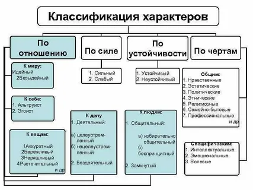
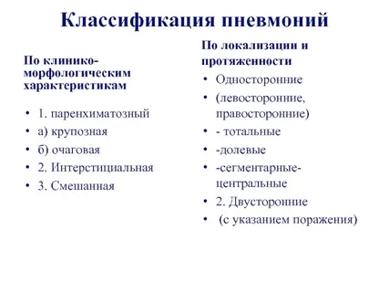
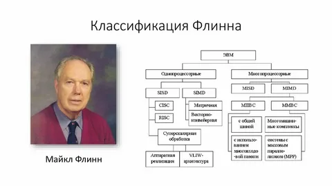

Классификация программного обеспечения (ПО) — это разделение программ по различным признакам.
Вот некоторые виды классификации По функциональному назначению операционные системы, прикладное программное обеспечение, системное программное обеспечение, утилиты
По способу распространения: коммерческое, бесплатное, с открытым исходным кодом. По типу использования: настольное программное обеспечение (предназначенное для работы на персональных компьютерах), веб-приложения (работающие через браузер), мобильные приложения (разработанные для смартфонов и планшетов)
По режиму эксплуатации: персональное (один пользователь, устанавливающий пароль для доступа к компьютеру), коллективное (используется группой людей), сетевое (доступна каждому, у кого имеется допуск)
По стабильности: надёжное (не требует исправлений или корректировка носит незначительный характер), среднее (нуждается в периодическом исправлении), нестабильное (в процессе эксплуатации возникают ошибки критического уровня, приводящие к зависанию устройства)
По языку программирования: низкоуровневое (набор инструкций, считываемых стационарными приборами ПК), ориентированное на компьютерные машины, ориентированное на алгоритмы, процедурно-ориентированное, проблемно-ориентированное
Основная задача классификации ПО — помочь лучше понять его характеристики и функциональность, чтобы пользователи могли выбирать и использовать наиболее подходящие программы для своих нужд